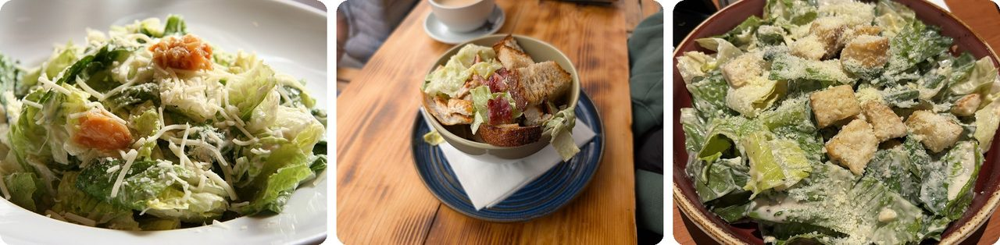
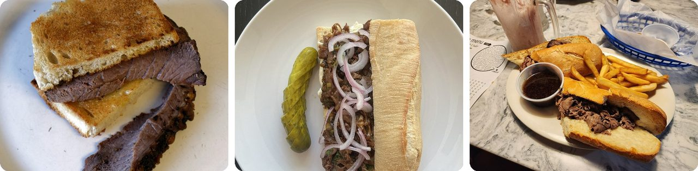
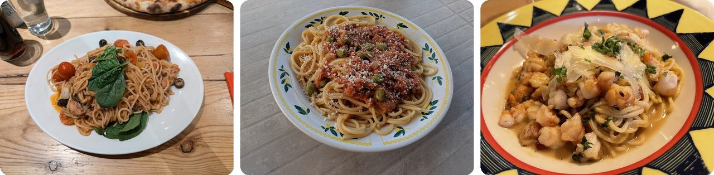
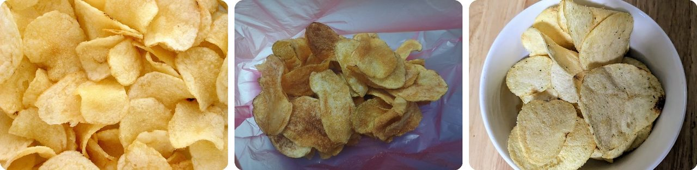
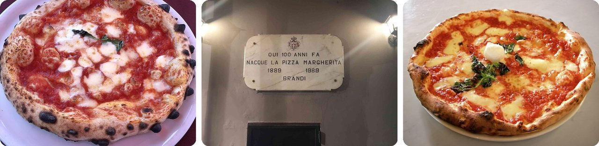
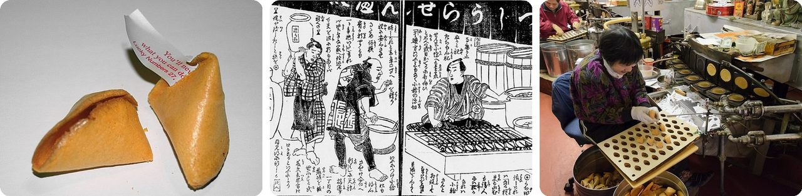
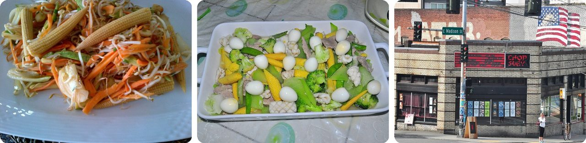
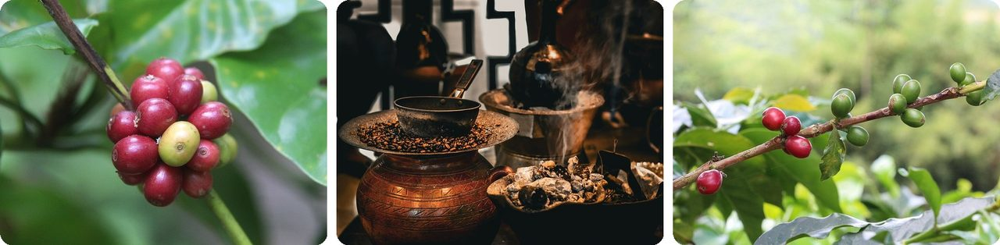
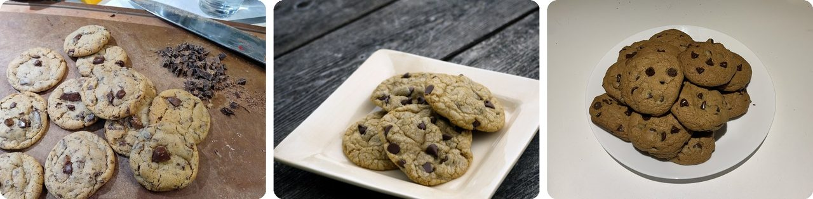

🌍 Top 10 Mythes sur l'origine des aliments
27 octobre 2026
1. 🇲🇽 La salade César ne doit pas son nom à Jules César

Un mythe très répandu dit que l'empereur romain Jules César y est pour quelque chose. Le vrai César, c'était Caesar Cardini, un immigré italien qui tenait un restaurant appelé Caesar's à Tijuana, au Mexique. Les Américains passaient la frontière pour y manger, parce que l'alcool était interdit chez eux.Sa fille Rosa a raconté que c'est arrivé le 4 juillet 1924. Avec la foule du jour férié, la cuisine n'avait presque plus rien, alors Cardini a improvisé avec ce qui restait et a mélangé la salade directement à table, comme un spectacle.
La première version utilisait des feuilles de laitue entières qu'on mangeait avec les doigts, et de la sauce Worcestershire au lieu des anchois.
Elle porte le nom du cuisinier, pas celui de l'empereur.
2. 🏴 L'histoire du sandwich inventé à la table de jeu est partie d'une rumeur

L'histoire raconte ceci : le comte de Sandwich, un lord anglais, ne voulait pas arrêter de jouer aux cartes, alors il a demandé du rosbif entre deux tranches de pain grillé. Pas besoin de fourchette, et pas de cartes pleines de gras.Mais ce récit apparaît pour la première fois dans un livre de voyage de 1770 écrit par un Français, Pierre-Jean Grosley, qui avait passé un an à Londres. Le biographe du comte pense qu'il mangeait plutôt à son bureau, parce qu'il était très occupé par la marine, la politique et les arts.
Et les gens mettaient déjà de la nourriture dans du pain bien avant lui. Il y a plus de 2 000 ans, un maître juif nommé Hillel enroulait de l'agneau et des herbes amères dans du pain plat, comme un wrap.
En gros, le comte a donné son nom au sandwich, mais pas l'idée.
3. 🇮🇹 Marco Polo n'a pas rapporté les pâtes de Chine en Italie

Beaucoup d'historiens disent que c'est un mythe. En 1154, un livre de géographie écrit pour le roi de Sicile décrivait déjà des nouilles fabriquées sur l'île et vendues ailleurs. C'était plus de 100 ans avant que Marco Polo parte pour la Chine.Les nouilles ont sans doute fait le grand tour : de la Chine jusqu'en Perse par la route de la Soie, puis avec des marchands arabes jusqu'en Sicile et en Espagne.
Alors, d'où vient l'histoire de Marco Polo ? L'autrice culinaire Jane Grigson pensait qu'elle était née dans les années 1920 ou 1930, dans une publicité pour une marque canadienne de spaghettis.
Imagine un slogan publicitaire qui a fini dans les livres d'histoire.
4. 🇺🇸 Les chips n'ont pas été inventées pour embêter un client difficile

La légende : en 1853, dans un restaurant de Saratoga Springs, dans l'État de New York, un cuisinier nommé George Crum en a eu marre d'un client qui renvoyait sans cesse ses frites parce qu'elles étaient trop épaisses. Alors Crum a coupé les pommes de terre fines comme du papier, les a fait frire bien croustillantes et a mis plein de sel, et le client a adoré.C'est une histoire amusante, mais on sait qu'elle est fausse. La plus vieille recette de chips connue se trouve dans un livre de cuisine anglais de 1817, 36 ans plus tôt. Une édition suivante dit d'éplucher la pomme de terre « en tournant, comme on épluche un citron », puis de faire frire ces copeaux dans de la graisse.
C'est une entreprise d'emballages qui a répandu la version de Crum dans une grande campagne de pub en 1973.
Autrement dit, le snack est plus vieux que l'histoire de sa naissance.
5. 🇮🇹 La pizza Margherita n'a sans doute pas été faite pour une reine

La légende dit que le 10 juin 1889, un pizzaïolo de Naples, Raffaele Esposito, a préparé trois pizzas pour la reine Margherita, en visite. Elle a adoré celle aux couleurs du drapeau italien : tomate rouge, mozzarella blanche et basilic vert. Une lettre de remerciement du palais est toujours accrochée dans son ancienne boutique, aujourd'hui la Pizzeria Brandi.Mais voilà le problème. Les chercheurs doutent que la lettre soit vraie, aucun journal de l'époque ne parle de cette visite, et l'histoire comme le nom ont d'abord été mis en avant dans les années 1930 et 1940.
Des garnitures comme la tomate, le basilic et de fines tranches de mozzarella étaient déjà décrites à Naples en 1849, 40 ans avant le soi-disant dîner de la reine.
C'est un tampon royal ajouté après coup.
6. 🇯🇵 Les biscuits chinois de la chance ont commencé japonais

On te les sert au restaurant chinois, mais ils ne viennent pas de Chine. Au XIXe siècle, à Kyoto, au Japon, on faisait déjà un biscuit très proche, le tsujiura senbei (辻占煎餅). Il était plus grand et plus foncé, fait avec du sésame et du miso, et le petit papier était glissé dans le pli au lieu d'être à l'intérieur.Ce sont très probablement des immigrés japonais en Californie qui ont apporté l'idée aux États-Unis au début des années 1900. Puis, pendant la Seconde Guerre mondiale, le gouvernement américain a enfermé de force plus de 100 000 Américains d'origine japonaise dans des camps surveillés, dont les gens qui fabriquaient ces biscuits. Selon une théorie, c'est ce qui a permis aux boulangers sino-américains de reprendre l'affaire.
Aujourd'hui, environ 3 milliards de biscuits de la chance sont fabriqués chaque année, surtout mangés aux États-Unis.
En gros, un petit gâteau japonais qui a fini par travailler dans les restaurants chinois.
7. 🇨🇳 Le chop suey n'a pas été inventé pour un dirigeant chinois en visite

Une histoire raconte que lorsque l'homme d'État chinois Li Hongzhang a visité les États-Unis en 1896, un cuisinier a inventé le chop suey pour plaire à la fois aux Chinois et aux Américains. Mais un chercheur qui a fouillé les archives n'a trouvé aucune preuve que Li ait mangé du chop suey là-bas. Li avait même emmené trois de ses propres cuisiniers.Le plat apparaissait déjà dans un journal de Brooklyn en 1884, 12 ans avant son voyage. Son nom vient sans doute de 杂碎 (zá suì, « tsap seui » dans la région de Taishan, au Guangdong), qui veut dire « un peu de tout », un plat de la région d'où venaient beaucoup des premiers immigrés chinois.
Les patrons de restaurant ont sans doute juste été malins : ils ont profité de cette visite célèbre pour présenter le chop suey comme le plat préféré de Li.
Imagine le nom d'un invité célèbre emprunté pour faire la pub d'un menu.
8. 🇫🇷 Dom Pérignon n'a pas inventé le champagne à bulles
Dom Pierre Pérignon était un moine français chargé de la cave à vin d'une abbaye de Champagne de 1668 à 1715. À l'époque, les bulles étaient un cauchemar. Quand il faisait plus chaud au printemps, le vin se remettait à pétiller dans les bouteilles, et elles pouvaient exploser. Une explosion pouvait faire éclater les bouteilles d'à côté.
Pérignon essayait donc en réalité d'empêcher les bulles. Le champagne pétillant n'est devenu le style principal qu'au milieu du XIXe siècle, plus de 100 ans après sa mort.
Sa phrase célèbre, « Venez vite, je goûte les étoiles ! », apparaît pour la première fois dans une publicité imprimée de la fin du XIXe siècle.
Autrement dit, le moine célèbre pour les bulles a passé sa vie à les combattre.
9. 🇪🇹 Le chevrier qui a découvert le café n'a sans doute jamais existé

La légende dit qu'un gardien de chèvres nommé Kaldi a remarqué que ses chèvres devenaient super excitées après avoir grignoté les baies rouges d'un buisson. Il en a goûté lui aussi, puis les a apportées à un moine, qui les a jetées au feu. L'odeur était si bonne qu'ils ont fait une boisson avec les baies grillées.L'histoire se serait passée vers l'an 850, mais elle apparaît pour la première fois dans un livre imprimé à Rome en 1671, plus de 800 ans plus tard. Cette première version ne donne même pas de nom au chevrier. Le nom « Kaldi » semble avoir été ajouté au XXe siècle.
Pourtant, la plus grande chaîne de cafés d'Éthiopie s'appelle aujourd'hui Kaldi's Coffee.
C'est une mascotte devenue une leçon d'histoire.
10. 🇺🇸 Le cookie aux pépites de chocolat n'est sans doute pas né d'un accident

L'histoire célèbre : dans les années 1930, Ruth Wakefield, qui tenait le Toll House Inn dans le Massachusetts, n'avait plus de noix, ou pensait que le chocolat allait fondre au four, alors elle a mis du chocolat haché à la place. Surprise, un nouveau biscuit !Les auteurs culinaires d'aujourd'hui pensent que c'est peu probable. Wakefield avait étudié l'économie domestique et tenait une cuisine très organisée. Dans les années 1970, elle a dit qu'elle voulait simplement offrir quelque chose de nouveau à ses clients, alors elle a cassé une tablette de chocolat Nestlé avec un pic à glace et mélangé les morceaux à sa pâte.
Nestlé a ensuite imprimé sa recette sur ses emballages de chocolat. Wakefield a raconté qu'on lui avait promis un seul dollar pour ça.
Pas un heureux hasard, juste une cuisinière qui savait exactement ce qu'elle faisait.
Le saviez-vous ?
En 1983, San Francisco et Los Angeles ont porté leur dispute sur l'inventeur du biscuit de la chance devant la Cour de révision historique de San Francisco. Pendant l'audience, quelqu'un a présenté comme preuve un biscuit avec ce message à l'intérieur : « Un juge de S.F. qui donne raison à L.A., pas très malin, le biscuit. » Le juge a donné raison à San Francisco, et Los Angeles a officiellement protesté. Les tribunaux se sont souvent disputés à propos de nourriture, comme celui du Massachusetts qui a décidé en 2006 qu'un burrito n'est pas un sandwich : les procès bizarres sur la nourriture pourraient être une super piste à explorer ensuite.
Crédits photo (Wikimedia Commons)
- #1: Caesar salad (2).jpg by Geoff Peters from Vancouver, BC, Canada, CC BY 2.0
- #1: Chicken Caesar Salad - Amo 2026-04-11.jpg by Andy Li, CC0
- #1: Caesar Salad from Tony Roma Restaurant- March 2024 02.jpg by Banej, CC BY-SA 4.0
- #2: Roast beef toasted sandwich - photo 1.jpg by Acabashi, CC BY-SA 4.0
- #2: Liat Portal for Foodie Disorder - Homemade roast beef baguette sandwich.jpg by HaJunkiyada, CC BY-SA 4.0
- #2: A roast beef sandwich with au jus sauce for dipping, served with a side of fries..jpg by 4chewnahdoe, CC BY-SA 4.0
- #3: Spaghetti Brighton - Napoli Restaurant 2024-10-31.jpg by Andy Li, CC0
- #3: Spaghetti biz-Zalza tal-Fenek.jpg by Simon Cutajar, CC BY-SA 4.0
- #3: Maya Spaghetti with Shrimp - September 2022 - Sarah Stierch.jpg by Missvain, CC BY 4.0
- #4: Potato-Chips.jpg by Evan-Amos, Public domain
- #4: Potato chips 2.jpg by Gaurav Dhwaj Khadka, CC BY-SA 4.0
- #4: Dill pickle chips.jpg by Hannah Clover, CC BY 4.0
- #5: Pizza-napoletana.jpg by Fabryx98, CC BY-SA 4.0
- #5: TargaInvenzionePizzaMargheritaDaBrandi.jpg by Alessandro57, CC BY-SA 4.0
- #5: Eq it-na pizza-margherita sep2005 sml.jpg by Valerio Capello at English Wikipedia, CC BY-SA 3.0
- #6: Fortune cookie broken 20040628 223252 1.jpg by User Lorax on en.wikipedia, CC BY-SA 3.0
- #6: Fortune Cookie 1878.jpg by 孟斉芳虎・画, Public domain
- #6: Golden Gate Fortune Cookie Company San Francisco January 2013 001.jpg by King of Hearts, CC BY-SA 3.0
- #7: Chop suey made in Ankara.jpg by E4024, CC BY-SA 4.0
- #7: Filipino chop suey.jpg by whologwhy, CC BY 2.0
- #7: Seattle - Chop Suey 02.jpg by Joe Mabel, CC BY-SA 3.0
- #8: Statue of Dom Pérignon at Moët & Chandon (8132642467).jpg by Michal Osmenda from Brussels, Belgium, CC BY 2.0
- #8: Pouring two champagne glasses.jpg by Quinn Dombrowski, CC BY-SA 2.0
- #8: Glass of champagne - bubbles.jpg by Remi Mathis, CC BY-SA 3.0
- #9: Coffee Ripe Berries Red.jpg by Jyppe Quidores, CC BY-SA 4.0
- #9: Coffee ceremony of Ethiopia and Eritrea 3.jpg by ProtoplasmaKid, CC BY-SA 4.0
- #9: Coffee berries in Hacienda Guayabal, Colombia.jpg by Bernard Gagnon, CC BY-SA 4.0
- #10: Chocolate chip cookies on cutting board.jpg by Mshuang2, CC0
- #10: Browned butter chocolate chip cookies (flickr) by grongar, CC BY 2.0
- #10: Plate of chocolate chip cookies, ready to munch.jpg by The-Wuje, CC BY-SA 4.0
.jpg){kind=link}


.jpg){kind=link}